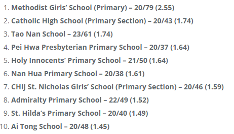
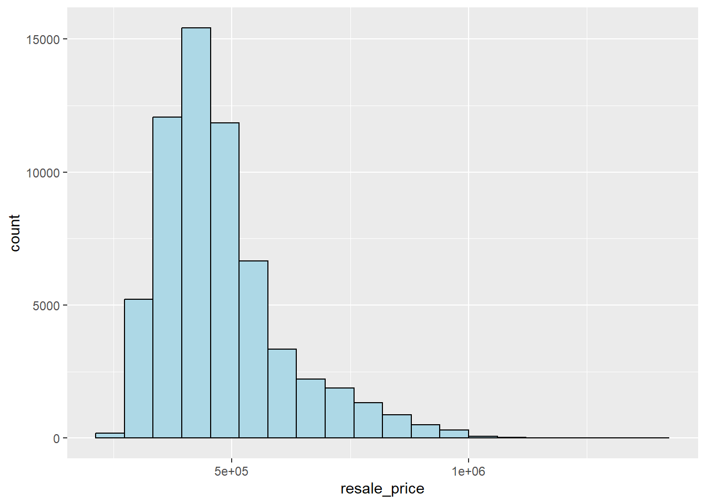
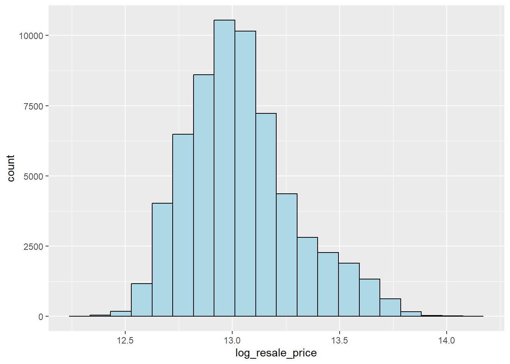
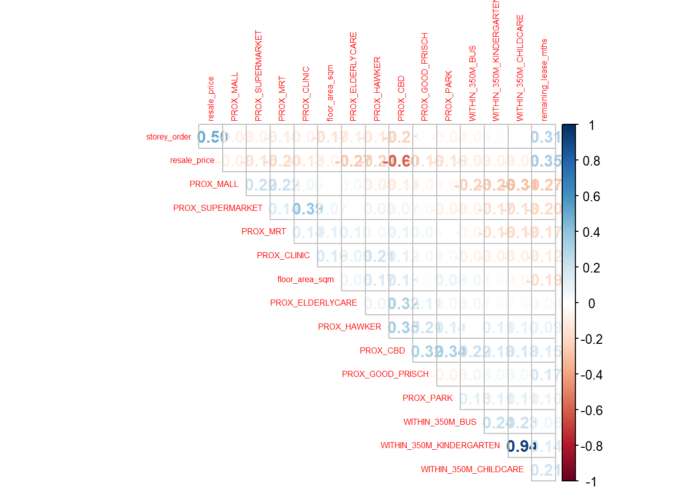
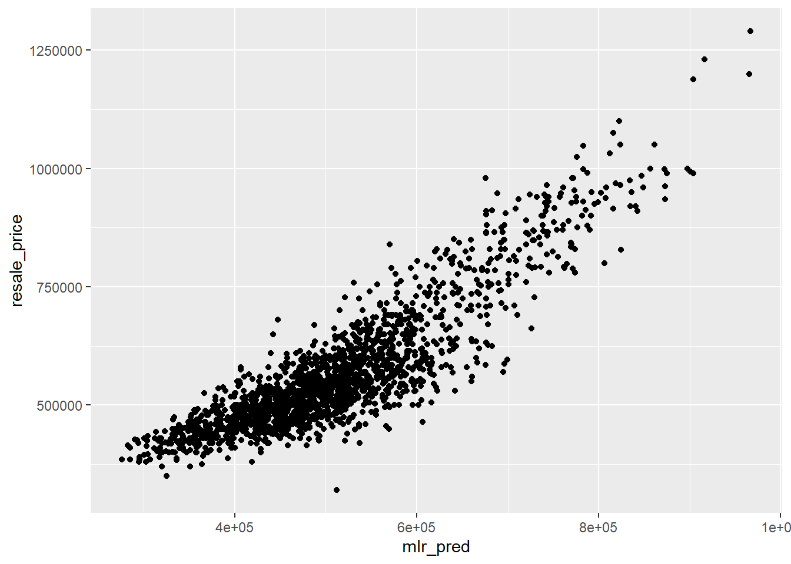
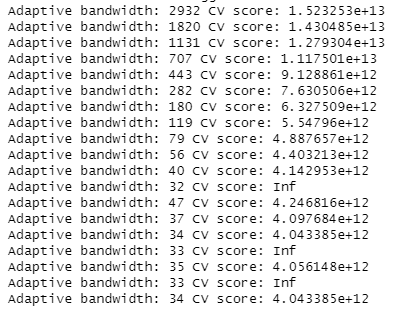
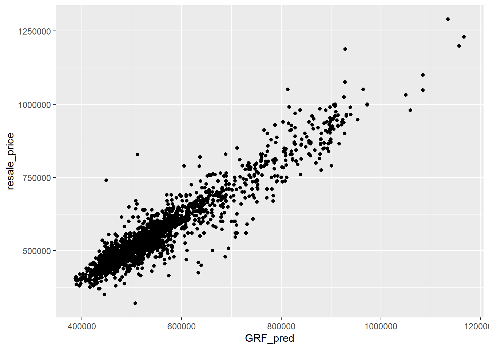

pacman::p_load(olsrr, corrplot, ggpubr, sf, spdep, tmap, tidyverse, httr, jsonlite, GWmodel, SpatialML)Take-home Exercise 3: Predicting HDB Public Housing Resale Pricies using Geographically Weighted Methods
1 Overview
1.1 Background
Housing is an essential component of household wealth worldwide. Buying a housing has always been a major investment for most people. The price of housing is affected by many factors. Some of them are global in nature such as the general economy of a country or inflation rate. Others can be more specific to the properties themselves. These factors can be further divided to structural and locational factors.
Structural factors are variables related to the property themselves such as the size, fitting, and tenure of the property. Locational factors are variables related to the neighbourhood of the properties such as proximity to childcare centre, public transport service and shopping centre.
1.2 Problem
Conventional, housing resale prices predictive models were built by using Ordinary Least Square (OLS) method. However, this method failed to take into consideration that spatial autocorrelation and spatial heterogeneity exists in geographic data sets such as housing transactions.
With the existence of spatial autocorrelation, the OLS estimation of predictive housing resale pricing models could lead to biased, inconsistent, or inefficient results (Anselin 1998). In view of this limitation, Geographical Weighted Models were introduced for calibrating predictive models for housing resale prices.
1.3 Task
In this take-home exercise, we will be creating models to predict HDB resale prices at the sub-market level (i.e. HDB 3-room, HDB 4-room and HDB 5-room) for the month of January and February 2023 in Singapore.
We will be building the models using both the conventional OLS and GWR method. We will then compare the performance of the conventional OLS method versus the geographical weighted methods.
2 Data
2.1 Aspatial Data
- resale-flat-prices.csv: HDB Resale Prices from 2017 onwards (.csv)
2.2 Geospatial Data
| Name | Format | Source |
|---|---|---|
| MPSZ-2019 | .shp | From Prof. Kam’s In-Class Exercise Data |
| MRT Locations | .shp | LTA Data Mall |
| Bustop Locations | .shp | LTA Data Mall |
| Eldercare Services | .shp | data.gov.sg |
| Hawker Centers | .geojson | data.gov.sg |
| Parks | .shp | data.gov.sg |
| Supermarkets | .geojson | data.gov.sg |
| CHAS Clinics | .geojson | data.gov.sg |
| Childcare Centers | .geojson | data.gov.sg |
| Kindergarten/Preschool | .geojson | data.gov.sg |
| Shopping Malls | .csv | Mall Coordinates Web Scraper |
| Primary Schools (extracted from the list on General information of schools) | .csv | data.gov.sg |
| Good Primary Schools | - | 2022 Primary School Rankings |
3 Packages
The packages we will be using in this analysis are:
olsrr: R package for building OLS and performing diagnostics tests
corrplot: Multivariate data visualisation and analysis
ggpubr: creating and customising ggplot2 based publication ready plots
sf: importing, managing and processing geospatial data
spdep: creating spatial weight matrix objects, global and spatial autocorrelation statistics and related calculations
tmap: choropleth mapping
tidyverse: attribute data handing
httr
jsonlite
SpatialML
4 Aspatial Data Wrangling
4.1 Importing Aspatial Data
First, we will be using read_csv() to import resale-flat-prices.csv into R as a tibble data frame.
resale <- read_csv("data/aspatial/resale-flat-prices.csv")Since the study requires us to focus on either three-room, four-room or five-room flat, I have decided to focus on 4 room flats. Hence, we need to filter the data to extract out the necessary data required.
5 Filter Resale Data
filter() from dplyr is used to select the desired flat_type and stores it in resale dataframe.
resale <- resale %>%
filter(flat_type == "4 ROOM")5.1 Transforming Resale Data
5.1.1 Creating New Columns
We will be creating new columns using mutate():
address: concatenating block and street_name together using paste() function
remaining_lease_yr & remaining_lease_mth: splitting the year and months of the remaining_lease column using str_sub() and then converting the characters into integers using as.integer()
resale_transform <- resale %>%
mutate(resale, address = paste(block,street_name)) %>%
mutate(resale, remaining_lease_yr = as.integer(str_sub(remaining_lease, 0, 2))) %>%
mutate(resale, remaining_lease_mth = as.integer(str_sub(remaining_lease, 9, 11)))5.1.2 Summing up remaining lease in months
Now we will replace NA values in the remaining_lease_mth column with 0 using is.na(). After which, we will multiply remaining_lease_yr by 12 to convert it into months. Then, we will create another column called “remaining_lease_mths” which sums the remaining_lease_year and remaining_lease_mth columns using rowSums().
resale_transform$remaining_lease_mth[is.na(resale_transform$remaining_lease_mth)] <- 0
resale_transform$remaining_lease_yr <- resale_transform$remaining_lease_yr * 12
resale_transform <- resale_transform %>%
mutate(resale_transform, remaining_lease_mths = rowSums(resale_transform[, c("remaining_lease_yr", "remaining_lease_mth")])) %>%
select(month, town, address, block, street_name, flat_type, storey_range, floor_area_sqm, flat_model,
lease_commence_date, remaining_lease_mths, resale_price)5.1.3 Retrieving Postal Codes and Coordinates of Addresses
Now we will be retrieving postal codes and coordinates of the addresses so that we can get their proximity to locational factors.
Creating a list storing unique addresses
We create a list to store unique addresses to ensure that we do not run the GET request more than what is necessary We can also sort it to make it easier for us to see at which address the GET request will fail. Here, we use unique() function of base R package to extract the unique addresses then use sort() function of base R package to sort the unique vectors.
add_list <- sort(unique(resale_transform$address))Creating a function to retrieve coordinates
Now we will create a function called get_coords to retrieve the coordinates from the OneMap.SG API.
Create a dataframe called
postal_coordsto store all the final retrieved coordinatesUse GET() function from httr package to make a GET request to the API
OneMap SG offers functions for us to query spatial data from the API in a tidy format and provides additional functionalities to allow easy data manipulation.
Here, we will be using their REST APIs to search address data for a given search value and retrieve the coordinates of the searched location.
The required variables to be included in the GET request is as follows:
searchVal: Keywords entered by user that is used to filter out the results.returnGeom{Y/N}: Checks if user wants to return the geometry.getAddrDetails{Y/N}: Checks if user wants to return address details for a point.
Create a dataframe
new_rowwhich stores each final set of coordinates retrieved during the loopCheck the number of responses returned and append to the main dataframe accordingly. We do this because:
Num of returned responses of the searched location varies because some locations have only 1 result while others have multiple. Hence we need to first look at only those that do not have empty postal codes then take the first set of coordinates
We can check to see if an address is invalid by looking at the number of rows returned by the request
Lastly, we will append the returned response (
new_row) with the necessary fields to the main dataframe (postal_coords) using rbind() function of base R package.
get_coords <- function(add_list){
# Create a data frame to store all retrieved coordinates
postal_coords <- data.frame()
for (i in add_list){
#print(i)
r <- GET('https://developers.onemap.sg/commonapi/search?',
query=list(searchVal=i,
returnGeom='Y',
getAddrDetails='Y'))
data <- fromJSON(rawToChar(r$content))
found <- data$found
res <- data$results
# Create a new data frame for each address
new_row <- data.frame()
# If single result, append
if (found == 1){
postal <- res$POSTAL
lat <- res$LATITUDE
lng <- res$LONGITUDE
new_row <- data.frame(address= i, postal = postal, latitude = lat, longitude = lng)
}
# If multiple results, drop NIL and append top 1
else if (found > 1){
# Remove those with NIL as postal
res_sub <- res[res$POSTAL != "NIL", ]
# Set as NA first if no Postal
if (nrow(res_sub) == 0) {
new_row <- data.frame(address= i, postal = NA, latitude = NA, longitude = NA)
}
else{
top1 <- head(res_sub, n = 1)
postal <- top1$POSTAL
lat <- top1$LATITUDE
lng <- top1$LONGITUDE
new_row <- data.frame(address= i, postal = postal, latitude = lat, longitude = lng)
}
}
else {
new_row <- data.frame(address= i, postal = NA, latitude = NA, longitude = NA)
}
# Add the row
postal_coords <- rbind(postal_coords, new_row)
}
return(postal_coords)
}Calling the function to retrieve coordinates
coords <- get_coords(add_list)Inspecting results
Here, we check whether the relevant columns contains any NA values with is.na() function of base R package and also “NIL”.
coords[(is.na(coords$postal) | is.na(coords$latitude) | is.na(coords$longitude) | coords$postal=="NIL"), ]From this, we notice that the address “215 CHOA CHU KANG CTRL” and “216 CHOA CHU KANG CTRL” do not have a postal code but has geographic coordinates. Upon further research, it has the postal code 608215 and 680216 respectively. However, as the API returned the same set of coordinates for both of these addresses, we shall proceed with keeping them as we are more interested in the coordinates for our analysis later on.
Combining resale and coordinates data
After retrieving the coordinates, we should combine the successful ones with our transformed resale dataset. We can do this by using left_join() function of dplyr package.
rs_coords <- left_join(resale_transform, coords, by = c('address' = 'address'))5.2 Creating rds file
Now that the resale dataset is now complete with the coordinates, we can save it in an rds file. This also prevents is from needing to run the GET request everytime.
rs_coords_rds <- write_rds(rs_coords, "data/rds/rs_coords.rds")5.3 Importing RDS file
rs_coords <- read_rds("data/rds/rs_coords.rds")
glimpse(rs_coords)5.3.1 Transform and Checking CRS
Since the coordinates (latitude and longitude) are in decimal degrees, the projected CRS is WGS84. We will need to assign them WGS84’s EPSG code 4326 first before transforming it to 3414, the EPSG code for SVY21. st_as_sf() converts the dataframe into an sf object, then st_transform() transforms the coordinates into the appropriate CRS.
rs_coords_sf <- st_as_sf(rs_coords,
coords = c("longitude",
"latitude"),
crs=4326) %>%
st_transform(crs = 3414)
st_crs(rs_coords_sf)6 Locational Factors Data Wrangling
6.1 Locational Factors with geographic coordinates
6.1.1 Importing Data & Checking CRS
eldercare <- st_read(dsn = "data/locational", layer = "ELDERCARE")mrt <- st_read(dsn = "data/locational", layer = "Train_Station_Exit_Layer")bus <- st_read(dsn = "data/locational", layer = "BusStop")parks <- st_read(dsn = "data/locational", layer = "NATIONALPARKS")hawker <- st_read("data/locational/hawker-centres-geojson.geojson")supermarket <- st_read("data/locational/supermarkets.geojson")clinic <- st_read("data/locational/moh-chas-clinics.geojson")childcare <- st_read("data/locational/childcare.geojson")kindergarten <- st_read("data/locational/preschools-location.geojson")malls <- read_csv("data/locational/mall_coordinates_updated.csv")
mall_sf <- st_as_sf(malls, coords = c("longitude", "latitude"), crs=4326)st_crs(eldercare)st_crs(mrt)st_crs(bus)st_crs(parks)st_crs(hawker)st_crs(supermarket)st_crs(clinic)st_crs(childcare)st_crs(kindergarten)st_crs(mall_sf)From the Results:
Datasets with WGS48 Geodetic CRS: hawker, supermarket, clinic, childcare, kindergarten, malls_sf. We will need to transform the CRS into SVY21
Datasets with SVY21 as Projected CRS: eldercare, mrt, bus, parks. For all of them, the EPSG code is 9001, which is wrong. We need to change the CRS into the correct EPSG code for SVY21, 3414
6.1.2 Assigning EPSG code and Transforming CRS
eldercare <- st_set_crs(eldercare, 3414)
mrt <- st_set_crs(mrt, 3414)
bus <- st_set_crs(bus, 3414)
parks <- st_set_crs(parks, 3414)
hawker <- hawker %>%
st_transform(crs=3414)
supermarket <- supermarket %>%
st_transform(crs=3414)
clinic <- clinic %>%
st_transform(crs=3414)
childcare <- childcare %>%
st_transform(crs=3414)
kindergarten <- kindergarten %>%
st_transform(crs=3414)
mall_sf <- st_transform(mall_sf, crs=3414)st_crs(eldercare)st_crs(mrt)st_crs(bus)st_crs(parks)st_crs(hawker)st_crs(supermarket)st_crs(clinic)st_crs(childcare)st_crs(kindergarten)st_crs(mall_sf)From the above results, we can see that the EPSG code of all the data has now been assigned correctly and they are all EPSG 3414.
6.1.3 Calculating Proximity
6.1.3.1 Creating get_prox function
get_prox <- function(origin_df, dest_df, col_name){
# creates a matrix of distances
dist_matrix <- st_distance(origin_df, dest_df)
# find the nearest location_factor and create new data frame
near <- origin_df %>%
mutate(PROX = apply(dist_matrix, 1, function(x) min(x)) / 1000)
# rename column name according to input parameter
names(near)[names(near) == 'PROX'] <- col_name
# Return df
return(near)
}What the code does:
create a matrix of distances between the HDB and the locational factor using st_distance of sf package.
get the nearest point of the locational factor by looking at the minimum distance using min function of base R package then add it to HDB resale data under a new column using mutate() function of dpylr package.
rename the column name according to input given by user so that the columns have appropriate and distinct names that are different from one another.
6.1.3.2 Calling get_prox function
We will be calling the function to get the proximity of the resale HDB flats and the locational factors such as: Eldercare, MRT, Hawker, Parks, Supermarkets, Clinics
Then we will create a new column in rs_coords_sf dataframe to store the proximity
rs_coords_sf <- get_prox(rs_coords_sf, eldercare, "PROX_ELDERLYCARE")
rs_coords_sf <- get_prox(rs_coords_sf, mrt, "PROX_MRT")
rs_coords_sf <- get_prox(rs_coords_sf, hawker, "PROX_HAWKER")
rs_coords_sf <- get_prox(rs_coords_sf, parks, "PROX_PARK")
rs_coords_sf <- get_prox(rs_coords_sf, supermarket, "PROX_SUPERMARKET")
rs_coords_sf <- get_prox(rs_coords_sf, clinic, "PROX_CLINIC")
rs_coords_sf <- get_prox(rs_coords_sf, mall_sf, "PROX_MALL")6.1.4 Creating get_within function
Now we will create a get_within function to calculate the number of factors within a specific distance.
get_within <- function(origin_df, dest_df, threshold_dist, col_name){
# creates a matrix of distances
dist_matrix <- st_distance(origin_df, dest_df)
# count the number of location_factors within threshold_dist and create new data frame
wdist <- origin_df %>%
mutate(WITHIN_DT = apply(dist_matrix, 1, function(x) sum(x <= threshold_dist)))
# rename column name according to input parameter
names(wdist)[names(wdist) == 'WITHIN_DT'] <- col_name
# Return df
return(wdist)
}What the function does:
create a matrix of distances between the HDB and the locational factor using st_distance of sf package.
get the sum of points of the locational factor that are within the threshold distance using sum function of base R package then add it to HDB resale data under a new column using mutate() function of dpylr package.
rename the column name according to input given by user so that the columns have appropriate and distinct names that are different from one another.
6.1.4.1 Calling get_within function
Here, we call the get_within function created earlier to get the number of locational factors that are within a certain threshold distance.
The threshold we set it to will be Within 350m for locational factors such as, Kindergartens, Childcare centres and Bus stops.
rs_coords_sf <- get_within(rs_coords_sf, kindergarten, 350, "WITHIN_350M_KINDERGARTEN")
rs_coords_sf <- get_within(rs_coords_sf, childcare, 350, "WITHIN_350M_CHILDCARE")
rs_coords_sf <- get_within(rs_coords_sf, bus, 350, "WITHIN_350M_BUS")6.2 Locational Factors without geographic coordinates
In this section, we retrieve those locational factors that are not easily obtainable from data.gov.sg and/or does not have any geographic coordinates.
6.2.1 CBD
We are required to get the proximity of the resale HDBs to the CBD. Based on a quick search, the latitude and longitude of Downtown Core (also known as CBD) are 1.287953 and 103.851784 respectively.
Since we already have the geographic coordinates of the resale data, we just need to convert the latitude and longitude of CBD into EPSG 3414 (SVY21) before running the get_prox function.
We will first create a dataframe consisting of the latitude and longitude coordinates of the CBD area then transform it to EPSG 3414 (SVY21) format.
Storing CDB coordinates in a dataframe:
name <- c('CBD Area')
latitude= c(1.287953)
longitude= c(103.851784)
cbd_coords <- data.frame(name, latitude, longitude)Assigning and transforming CRS
cbd_coords_sf <- st_as_sf(cbd_coords,
coords = c("longitude",
"latitude"),
crs=4326) %>%
st_transform(crs = 3414)
st_crs(cbd_coords_sf)Calling get_prox function
rs_coords_sf <- get_prox(rs_coords_sf, cbd_coords_sf, "PROX_CBD")6.2.2 Primary Schools
Reading CSV File
pri_sch <- read_csv("data/locational/general-information-of-schools.csv")Extracting Primary Schools and Required Columns
pri_sch <- pri_sch %>%
filter(mainlevel_code == "PRIMARY") %>%
select(school_name, address, postal_code, mainlevel_code)Creating a list to store postal codes
prisch_list <- sort(unique(pri_sch$postal_code))Calling get_coords function to get coordinates of Primary Schools
prisch_coords <- get_coords(prisch_list)prisch_coords[(is.na(prisch_coords$postal) | is.na(prisch_coords$latitude) | is.na(prisch_coords$longitude)),]The postal codes of the schools with NA values in the postal code, latitude and longitude are:
- 319133 (Pei Chun Public School)
- 228091 (St. Margaret’s Primary School)
This is due to the postal codes and the addresses in our data not matching with the postal codes and addresses in the API. Let’s quickly modify those:
#Pei Chun Public School
pri_sch[pri_sch$school_name == "PEI CHUN PUBLIC SCHOOL", "address"] <- "16 LORONG 7 TOA PAYOH"
pri_sch[pri_sch$school_name == "PEI CHUN PUBLIC SCHOOL", "postal_code"] <- "319320"
#St. Margaret's Primary School
pri_sch[pri_sch$school_name == "ST. MARGARET'S PRIMARY SCHOOL", "address"] <- "2 MATTAR ROAD"
pri_sch[pri_sch$school_name == "ST. MARGARET'S PRIMARY SCHOOL", "postal_code"] <- "387724"Updating the coordinates dataframe again:
prisch_list <- sort(unique(pri_sch$postal_code))prisch_coords <- get_coords(prisch_list)Checking again to make sure we have no more NA values:
prisch_coords[(is.na(prisch_coords$postal) | is.na(prisch_coords$latitude) | is.na(prisch_coords$longitude)),]0 rows with NA values.
Combining coordinates with Primary School Names
Here, we combine the retrieved coordinates with the df that has the Primary School Names so that we can verify whether we have extracted it correctly. We combine it using the left_join function of dplyr package.
prisch_coords = prisch_coords[c("postal","latitude", "longitude")]
pri_sch <- left_join(pri_sch, prisch_coords, by = c('postal_code' = 'postal'))Checking again for any NA values:
pri_sch[(is.na(pri_sch$latitude) | is.na(pri_sch$longitude)),]We have successfully retrived all the coordinates of the primary schools.
Converting pri_sch dataframe into an sf object and transforming CRS
We will use st_as_sf() function of sf package to convert the data frame into sf object, and then use st_transform() function of sf package to transform the coordinates of the sf object.
prisch_sf <- st_as_sf(pri_sch,
coords = c("longitude",
"latitude"),
crs=4326) %>%
st_transform(crs = 3414)
st_crs(prisch_sf)Calling get_within function
Now we will call the get_within function to get the number of primary schools within the 1km threshold.
rs_coords_sf <- get_within(rs_coords_sf, prisch_sf, 1000, "WITHIN_1KM_PRISCH")6.2.3 Good Primary Schools
We need to extract the list of “good” primary schools from online websites since there are no datasets available. In particular, we can look at salary.sg for the list of Best Primary Schools of 2022. Here is the top 10 list:

#creating a dataframe to store the schools
school_name <- c("METHODIST GIRLS' SCHOOL (PRIMARY)",
"CATHOLIC HIGH SCHOOL",
"TAO NAN SCHOOL",
"PEI HWA PRESBYTERIAN PRIMARY SCHOOL",
"HOLY INNOCENTS' PRIMARY SCHOOL",
"NAN HUA PRIMARY SCHOOL",
"CHIJ SAINT. NICHOLAS GIRLS' SCHOOL",
"ADMIRALTY PRIMARY SCHOOL",
"SAINT. HILDA'S PRIMARY SCHOOL",
"AI TONG SCHOOL")
top_good_pri <- data.frame(school_name)Getting coordinates of the schools
We can call out get_coords function to retrieve the coordinates of the top 10 primary schools. But first, we need to store the school names in a list.
good_pri_list <- unique(top_good_pri$school_name)goodprisch_coords <- get_coords(good_pri_list)Inspecting results
goodprisch_coords[(is.na(goodprisch_coords$postal) | is.na(goodprisch_coords$latitude) | is.na(goodprisch_coords$longitude)), ]No values with NA, all the coordinates of the good primary schools have been retrived successfully.
Converting goodprisch_coords dataframe into an sf object and transforming CRS
goodpri_sf <- st_as_sf(goodprisch_coords,
coords = c("longitude",
"latitude"),
crs=4326) %>%
st_transform(crs = 3414)
st_crs(goodpri_sf)Getting proximity to good primary schools
Now we call the get_prox function to get the proximity of the HDB flats and good primary schools.
rs_coords_sf <- get_prox(rs_coords_sf, goodpri_sf, "PROX_GOOD_PRISCH")6.3 Writing to RDS file
Now our resale data is complete with all the locational factors. We can save it in an rds file so that we do not have to keep running all the codes above.
rs_factors_rds <- write_rds(rs_coords_sf, "data/rds/rs_factors.rds")7 Encoding Locational Factors
7.1 Reading RDS File
rs_sf <- read_rds("data/rds/rs_factors.rds")
glimpse(rs_sf)From the dataframe, we can see that storey_range is in character type. It is a categorical variable, which cannot be used in the regression equation just as it is. It needs to be recoded into a series of variables which then can be used in the regression model.
We can use “dummy coding” where it consists of creating dichotomous variables where each level of the categorical variable is contrasted to a specified reference level.
However, some categorical variables have levels that are ordered. Hence, they can be converted to numerical values instead and used as is. In this scenario, storey_range can be ranked from low to high. By doing so, we can gain insight as to whether higher/lower floors affect the resale price.
Hence, instead of using dummy variables, we will be using sorting the storey_range categorical variable and assigning numerical values that are in ascending order.
7.2 Extracting unique storey_range and sort
storeys <- sort(unique(rs_sf$storey_range))7.3 Creating dataframe storey_range_order to store the order of storey_range
storey_order <- 1:length(storeys)
storey_range_order <- data.frame(storeys, storey_order)
head(storey_range_order)7.4 Combining storey_order with resale dataframe
rs_sf <- left_join(rs_sf, storey_range_order, by= c("storey_range" = "storeys"))
glimpse(rs_sf)7.5 Selecting required columns for analysis
rs_req <- rs_sf %>%
select(month, resale_price, floor_area_sqm, storey_order, remaining_lease_mths,
PROX_CBD, PROX_ELDERLYCARE, PROX_HAWKER, PROX_MRT, PROX_PARK, PROX_GOOD_PRISCH, PROX_MALL, PROX_CLINIC,
PROX_SUPERMARKET, WITHIN_350M_KINDERGARTEN, WITHIN_350M_CHILDCARE, WITHIN_350M_BUS, WITHIN_1KM_PRISCH)glimpse(rs_req)7.6 Writing to rds file
This is the final resale data file we will use for our model later.
resale_final <- write_rds(rs_req, "data/rds/resale_final.rds")7.7 Viewing Summary
resale_final <- read_rds("data/rds/resale_final.rds")
summary(resale_final) month resale_price floor_area_sqm storey_order
Length:61961 Min. : 218000 Min. : 70.00 Min. : 1.000
Class :character 1st Qu.: 385000 1st Qu.: 91.00 1st Qu.: 2.000
Mode :character Median : 446000 Median : 93.00 Median : 3.000
Mean : 475349 Mean : 95.08 Mean : 3.364
3rd Qu.: 528000 3rd Qu.:102.00 3rd Qu.: 4.000
Max. :1370000 Max. :145.00 Max. :17.000
remaining_lease_mths PROX_CBD PROX_ELDERLYCARE PROX_HAWKER
Min. : 517.0 Min. : 0.9994 Min. :0.0000 Min. :0.03046
1st Qu.: 799.0 1st Qu.: 9.8417 1st Qu.:0.3148 1st Qu.:0.38411
Median : 944.0 Median :13.2615 Median :0.6230 Median :0.66519
Mean : 941.2 Mean :12.3244 Mean :0.8013 Mean :0.77650
3rd Qu.:1109.0 3rd Qu.:15.1536 3rd Qu.:1.1121 3rd Qu.:0.99302
Max. :1171.0 Max. :19.6501 Max. :3.3016 Max. :2.86763
PROX_MRT PROX_PARK PROX_GOOD_PRISCH PROX_MALL
Min. :0.02179 Min. :0.04422 Min. :0.07076 Min. :0.0000
1st Qu.:0.26848 1st Qu.:0.51139 1st Qu.:1.90254 1st Qu.:0.3654
Median :0.47611 Median :0.72548 Median :3.14692 Median :0.5687
Mean :0.55589 Mean :0.83752 Mean :3.25342 Mean :0.6465
3rd Qu.:0.75320 3rd Qu.:1.04176 3rd Qu.:4.44199 3rd Qu.:0.8416
Max. :2.12909 Max. :2.66145 Max. :8.76399 Max. :2.3385
PROX_CLINIC PROX_SUPERMARKET WITHIN_350M_KINDERGARTEN
Min. :0.0000 Min. :0.0000 Min. : 0.000
1st Qu.:0.1187 1st Qu.:0.1693 1st Qu.: 3.000
Median :0.1817 Median :0.2546 Median : 5.000
Mean :0.1994 Mean :0.2790 Mean : 4.845
3rd Qu.:0.2600 3rd Qu.:0.3642 3rd Qu.: 6.000
Max. :0.8699 Max. :1.5713 Max. :23.000
WITHIN_350M_CHILDCARE WITHIN_350M_BUS WITHIN_1KM_PRISCH geometry
Min. : 0.000 Min. : 0.000 Min. :0.000 POINT :61961
1st Qu.: 3.000 1st Qu.: 6.000 1st Qu.:2.000 epsg:3414 : 0
Median : 4.000 Median : 8.000 Median :3.000 +proj=tmer...: 0
Mean : 3.914 Mean : 8.018 Mean :3.239
3rd Qu.: 5.000 3rd Qu.:10.000 3rd Qu.:4.000
Max. :20.000 Max. :19.000 Max. :9.000 8 Geospatial Data Wrangling
8.1 Importing Geospatial Data
mpsz <- st_read(dsn = "data/geospatial", layer = "MPSZ-2019")Reading layer `MPSZ-2019' from data source
`C:\gailteh\IS415-GAA\Take-home_Ex\Take-Home_Ex03\data\geospatial'
using driver `ESRI Shapefile'
Simple feature collection with 332 features and 6 fields
Geometry type: MULTIPOLYGON
Dimension: XY
Bounding box: xmin: 103.6057 ymin: 1.158699 xmax: 104.0885 ymax: 1.470775
Geodetic CRS: WGS 84Obtaining coordinate system using st_crs()
st_crs(mpsz)Coordinate Reference System:
User input: WGS 84
wkt:
GEOGCRS["WGS 84",
DATUM["World Geodetic System 1984",
ELLIPSOID["WGS 84",6378137,298.257223563,
LENGTHUNIT["metre",1]]],
PRIMEM["Greenwich",0,
ANGLEUNIT["degree",0.0174532925199433]],
CS[ellipsoidal,2],
AXIS["latitude",north,
ORDER[1],
ANGLEUNIT["degree",0.0174532925199433]],
AXIS["longitude",east,
ORDER[2],
ANGLEUNIT["degree",0.0174532925199433]],
ID["EPSG",4326]]The projected CRS for mpsz dataframe is WGS84, but we need it to be in SVY21 with EPSG code 3414.
mpsz <- st_transform(mpsz, 3414)
st_crs(mpsz)Coordinate Reference System:
User input: EPSG:3414
wkt:
PROJCRS["SVY21 / Singapore TM",
BASEGEOGCRS["SVY21",
DATUM["SVY21",
ELLIPSOID["WGS 84",6378137,298.257223563,
LENGTHUNIT["metre",1]]],
PRIMEM["Greenwich",0,
ANGLEUNIT["degree",0.0174532925199433]],
ID["EPSG",4757]],
CONVERSION["Singapore Transverse Mercator",
METHOD["Transverse Mercator",
ID["EPSG",9807]],
PARAMETER["Latitude of natural origin",1.36666666666667,
ANGLEUNIT["degree",0.0174532925199433],
ID["EPSG",8801]],
PARAMETER["Longitude of natural origin",103.833333333333,
ANGLEUNIT["degree",0.0174532925199433],
ID["EPSG",8802]],
PARAMETER["Scale factor at natural origin",1,
SCALEUNIT["unity",1],
ID["EPSG",8805]],
PARAMETER["False easting",28001.642,
LENGTHUNIT["metre",1],
ID["EPSG",8806]],
PARAMETER["False northing",38744.572,
LENGTHUNIT["metre",1],
ID["EPSG",8807]]],
CS[Cartesian,2],
AXIS["northing (N)",north,
ORDER[1],
LENGTHUNIT["metre",1]],
AXIS["easting (E)",east,
ORDER[2],
LENGTHUNIT["metre",1]],
USAGE[
SCOPE["Cadastre, engineering survey, topographic mapping."],
AREA["Singapore - onshore and offshore."],
BBOX[1.13,103.59,1.47,104.07]],
ID["EPSG",3414]]Its is now in the correct EPSG code.
Checking for invalid geometry:
length(which(st_is_valid(mpsz) == FALSE))[1] 6#making the geometries valid
mpsz <- st_make_valid(mpsz)
length(which(st_is_valid(mpsz) == FALSE))[1] 0st_bbox(mpsz) xmin ymin xmax ymax
2667.538 15748.721 56396.440 50256.334 9 Exploratory Data Analysis
9.1 Statistical Graphs
We can plot the distribution of resale_price.
ggplot(data=resale_final, aes(x=`resale_price`)) +
geom_histogram(bins=20, color="black", fill="light blue")
There is a right skewed distribution, meaning that more of the 4-Room flats were transacted at relative lower prices. Statistically, the skewed distribution can be normalised by doing log transformation. We can derive a new variable called log_resale_price by doing a log transformation on the variable resale_price by using mutate() of dplyr package.
resale_final <- resale_final %>%
mutate(`log_resale_price` = log(resale_price))Plotting the distribution of log_resale_price:
ggplot(data=resale_final, aes(x=`log_resale_price`)) +
geom_histogram(bins=20, color="black", fill="light blue")
We can see that the post-transformation distribution is relatively less skewed, but we will still use the original resale_price variable as log_resale_price has high correlation with actual resale price.
10 Predictive Modelling
Now we will be creating predictive models to predict the HDB resale prices. We will be using the Ordinary Least Squares method and Geographical Weighted Random Forest Method.
10.1 Preparing Data
10.1.1 Reading Data
resale_final <- read_rds("data/rds/resale_final.rds")10.1.2 Data Sampling
We need to split our data into training and testing data. From the requirements of the assignment, our training data is data from 1st January 2021 to 31st December 2022 while our training data is data between January and February 2023.
train_data <- resale_final %>% filter(month >= "2021-01" & month <= "2022-12")
test_data <- resale_final %>% filter(month >= "2023-01" & month <= "2023-02")write_rds(train, "data/rds/train.rds")
write_rds(test, "data/rds/test.rds")10.2 Computing Correlation Matrix
Before loading the variables into a predictive model, we need to ensure that our variables are not highly correlated with each other, because using highly correlated variables in our model will compromise the quality of our model as it will be skewed towards the collinear variables.
resale_nogeo <- resale_final %>%
st_drop_geometry()
corrplot::corrplot(cor(resale_nogeo[, 2:17]),
diag = FALSE,
order = "AOE",
tl.pos = "td",
tl.cex = 0.5,
method = "number",
type = "upper")
Based on this, the variables WITHIN_350M_KINDERGARTEN and WITHIN_350M_CHILDCARE have a high positive correlation (0.91). This is likely because some childcare centers are also considered to be kindergartens as well. Hence we will drop the WITHIN_350_CHILDCARE variable for subsequent modelling.
10.3 Retrieving Stored Data
train_data <- read_rds("data/rds/train.rds")
test_data <- read_rds("data/rds/test.rds")11 Building a non-spatial Multiple Linear Regression model
price_mlr <- lm(resale_price ~ floor_area_sqm +
storey_order + remaining_lease_mths +
PROX_CBD + PROX_ELDERLYCARE + PROX_HAWKER +
PROX_MRT + PROX_PARK + PROX_MALL + PROX_GOOD_PRISCH +
PROX_SUPERMARKET + WITHIN_350M_KINDERGARTEN +
WITHIN_350M_BUS + WITHIN_1KM_PRISCH,
data=train_data)write_rds(price_mlr, "data/rds/price_mlr.rds")price_mlr <- read_rds("data/rds/price_mlr.rds")
summary(price_mlr)
Call:
lm(formula = resale_price ~ floor_area_sqm + storey_order + remaining_lease_mths +
PROX_CBD + PROX_ELDERLYCARE + PROX_HAWKER + PROX_MRT + PROX_PARK +
PROX_MALL + PROX_GOOD_PRISCH + PROX_SUPERMARKET + WITHIN_350M_KINDERGARTEN +
WITHIN_350M_BUS + WITHIN_1KM_PRISCH, data = train)
Residuals:
Min 1Q Median 3Q Max
-378846 -44193 -466 45248 392343
Coefficients:
Estimate Std. Error t value Pr(>|t|)
(Intercept) 89969.053 8028.126 11.207 < 2e-16 ***
floor_area_sqm 3435.672 68.948 49.830 < 2e-16 ***
storey_order 16233.828 227.195 71.453 < 2e-16 ***
remaining_lease_mths 347.776 3.191 108.990 < 2e-16 ***
PROX_CBD -15982.636 153.206 -104.321 < 2e-16 ***
PROX_ELDERLYCARE -6294.118 781.114 -8.058 8.13e-16 ***
PROX_HAWKER -20214.410 946.856 -21.349 < 2e-16 ***
PROX_MRT -29133.168 1322.028 -22.037 < 2e-16 ***
PROX_PARK 5264.408 1042.177 5.051 4.42e-07 ***
PROX_MALL -17752.299 1331.878 -13.329 < 2e-16 ***
PROX_GOOD_PRISCH -3177.914 284.756 -11.160 < 2e-16 ***
PROX_SUPERMARKET 7599.888 3101.589 2.450 0.0143 *
WITHIN_350M_KINDERGARTEN -860.577 210.862 -4.081 4.49e-05 ***
WITHIN_350M_BUS 1240.502 165.170 7.510 6.10e-14 ***
WITHIN_1KM_PRISCH -10697.646 349.536 -30.605 < 2e-16 ***
---
Signif. codes: 0 '***' 0.001 '**' 0.01 '*' 0.05 '.' 0.1 ' ' 1
Residual standard error: 68710 on 23641 degrees of freedom
Multiple R-squared: 0.7187, Adjusted R-squared: 0.7185
F-statistic: 4314 on 14 and 23641 DF, p-value: < 2.2e-1611.1 Predicting using Test Data
mlr_pred <- predict.lm(price_mlr, test_data)Saving the output into an rds file:
mlr_pred <- write_rds(mlr_pred, "data/rds/mlr_pred.rds")11.1.1 Converting output into a dataframe
mlr_pred <- read_rds("data/rds/mlr_pred.rds")
mlr_pred_df <- as.data.frame(mlr_pred)
test_data_p_mlr <- cbind(test_data, mlr_pred_df)11.1.2 Calculating RMSE
Root mean square error (RMSE) allows us to measure how far predicted values are from observed values in a regression analysis. rmse() of Metrics package is used to compute the RMSE.
Metrics::rmse(test_data_p_mlr$resale_price,
test_data_p_mlr$mlr_pred)[1] 82423.411.2 Visualising Predicted Values
ggplot(data = test_data_p_mlr,
aes(x = mlr_pred,
y = resale_price)) +
geom_point()
12 Building Geographical Weighted Random Forest Predictive Model
12.1 Retrieving stored data
train_data <- read_rds("data/rds/train.rds")
test_data <- read_rds("data/rds/test.rds")12.2 Scaling Training Data
As the computation time for the original training data set takes too long on my computer, I have decided to scale down the training data to the latest 5 months of data (August to December 2022), so that the I can still calibrate a model and do the prediction.
train_data_scaled <- train_data %>% filter(month >= "2022-08" & month <= "2022-12")Saving as rds file:
write_rds(train_data_scaled, "data/rds/train_data_scaled.rds")12.3 Retrieving scaled training data
train_data_scaled <- read_rds("data/rds/train_data_scaled.rds")train_data_sp <- as_Spatial(train_data_scaled)
train_data_spclass : SpatialPointsDataFrame
features : 4733
extent : 11655.33, 42645.18, 28330.23, 48675.05 (xmin, xmax, ymin, ymax)
crs : +proj=tmerc +lat_0=1.36666666666667 +lon_0=103.833333333333 +k=1 +x_0=28001.642 +y_0=38744.572 +ellps=WGS84 +towgs84=0,0,0,0,0,0,0 +units=m +no_defs
variables : 18
names : month, resale_price, floor_area_sqm, storey_order, remaining_lease_mths, PROX_CBD, PROX_ELDERLYCARE, PROX_HAWKER, PROX_MRT, PROX_PARK, PROX_GOOD_PRISCH, PROX_MALL, PROX_CLINIC, PROX_SUPERMARKET, WITHIN_350M_KINDERGARTEN, ...
min values : 2022-08, 325000, 74, 1, 542, 0.999393538715878, 1.98943787433087e-08, 0.0395321340230547, 0.0217933772276802, 0.0442179536967566, 0.117653336456023, 2.21189111471176e-12, 5.7601157446257e-09, 1.21715176356525e-07, 0, ...
max values : 2022-12, 1370000, 126, 17, 1148, 19.4237844042343, 3.2823136575237, 2.80237498784495, 2.12908590009577, 2.66145274727399, 8.6550509283742, 2.28266595414586, 0.869920099464176, 1.36375821567757, 23, ... 12.4 Computing Adaptive Bandwidth
Next, we will use bw.gwr() package from GWmodel to determine the optimal bandwidth to be used.
bw_adaptive <- bw.gwr(resale_price ~ floor_area_sqm +
storey_order + remaining_lease_mths +
PROX_CBD + PROX_ELDERLYCARE + PROX_HAWKER +
PROX_MRT + PROX_PARK + PROX_MALL +
PROX_SUPERMARKET + WITHIN_350M_KINDERGARTEN+
WITHIN_350M_BUS + WITHIN_1KM_PRISCH,
data=train_data_sp,
approach="CV",
kernel="gaussian",
adaptive=TRUE,
longlat=FALSE)Screenshot of the output:

The results show that 34 neighbour points will be the optimal bandwidth to be used for the adaptive bandwidth.
write_rds(bw_adaptive, "data/rds/bw_adaptive.rds")12.5 Preparing Coordinates Data
12.5.1 Extracting Coordinates Data
We will extract the x and y coordinates of the full, training and test data sets.
coords <- st_coordinates(resale_final)
coords_train <- st_coordinates(train_data_scaled)
coords_test <- st_coordinates(test_data)coords_train <- write_rds(coords_train, "data/rds/coords_train.rds" )
coords_test <- write_rds(coords_test, "data/rds/coords_test.rds" )Retrieving Coords Data
coords_train <- read_rds("data/rds/coords_train.rds")
coords_test <- read_rds("data/rds/coords_test.rds")12.5.2 Dropping Geometry field
train_data_scaled <- train_data_scaled %>%
st_drop_geometry()12.6 Calibrating Geographical Random Forest Model
We will now use grf() of SpatialML package to calibrate a Geographically Weighted Random Forest model to predict HDB resale pricing.
set.seed(1234)
gwRF_adaptive <- grf(formula = resale_price ~ floor_area_sqm + storey_order +
remaining_lease_mths + PROX_CBD + PROX_ELDERLYCARE +
PROX_HAWKER + PROX_MRT + PROX_PARK + PROX_MALL +
PROX_SUPERMARKET + WITHIN_350M_KINDERGARTEN +
WITHIN_350M_BUS + WITHIN_1KM_PRISCH,
dframe=train_data_scaled,
bw=bw_adaptive,
kernel="adaptive",
coords=coords_train,
ntree = 30,
min.node.size = 20)Screenshots of the output:
Saving the model output into rds format:
write_rds(gwRF_adaptive, "data/rds/gwRF_adaptive.rds")Retrieving the saved model for future use:
gwRF_adaptive <- read_rds("data/rds/gwRF_adaptive.rds")12.7 Predicting by using test data
12.7.1 Preparing Test Data
We will combine the test data with its corresponding coordinates data
test_data <- cbind(test_data, coords_test) %>%
st_drop_geometry()12.7.2 Predicting with test data
Next, predict.grf() of spatialML package will be used to predict the resale value by using the test data and gwRF_adaptive model calibrated earlier.
gwRF_pred <- predict.grf(gwRF_adaptive,
test_data,
x.var.name="X",
y.var.name="Y",
local.w=1,
global.w=0)Saving the output into rds file for future use.
GRF_pred <- write_rds(gwRF_pred, "data/rds/GRF_pred.rds")12.7.3 Converting Predicted Output into a dataframe
GRF_pred <- read_rds("data/rds/GRF_pred.rds")
GRF_pred_df <- as.data.frame(GRF_pred)cbind() is used to append the predicted values onto test_data.
test_data_p <- cbind(test_data, GRF_pred_df) write_rds(test_data_p, "data/rds/test_data_p.rds")12.7.4 Calculating Root Mean Squared Error
Root mean square error (RMSE) allows us to measure how far predicted values are from observed values in a regression analysis. rmse() of Metrics package is used to compute the RMSE.
Metrics::rmse(test_data_p$resale_price,
test_data_p$GRF_pred)[1] 43687.9312.7.5 Visualising Predicted Values
We can also use a scatterplot to visualise the actual resale price and predicted resale price.
ggplot(data = test_data_p,
aes(x = GRF_pred,
y = resale_price)) +
geom_point()